Варистор
Варистор является пассивным двухвыводным, твердотельным полупроводниковым прибором, который используется для обеспечения защиты электрических и электронных схем. В отличие от плавкого предохранителя или автоматического выключателя, которые обеспечивают защиту по току, варистор обеспечивает защиту от перенапряжения с помощью стабилизации напряжения подобно стабилитрону.
Варистор (Varistor - variable resistor, переменный резистор) - это резистор, имеющий переменное сопротивление, что в свою очередь описывает режим его работы. В отличие от "классического" переменного резистора, сопротивление которого может быть изменено вручную, варистор меняет свое сопротивления автоматически с изменением напряжения на его контактах, что делает его сопротивление зависимым от напряжения, другими словами его можно охарактеризовать как нелинейный резистор.
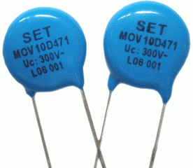
Рис. 1 - Внешний вид и условное обозначение варистора
Варисторы изготавливают из полупроводникового материала. Это позволяет использовать его как в цепях переменного, так и постоянного тока.
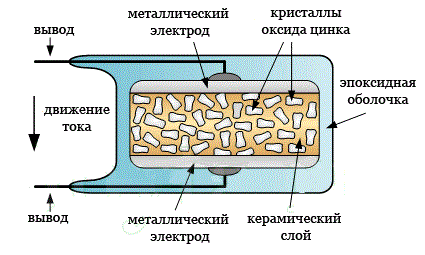
Рис. 2 - Устройство варистора
Варистор во многом похож по размеру и внешнему виду на конденсатор и его часто путают с ним. Тем не менее, конденсатор не может подавлять скачки напряжения таким же образом, как варистор.
Всплески напряжения часто возникают в самой схеме или поступают в нее от внешних источников. Высоковольтные всплески напряжения могут быстро нарастать и доходить до нескольких тысяч вольт, и именно от этих импульсов напряжения необходимо защищать электронные компоненты схемы.
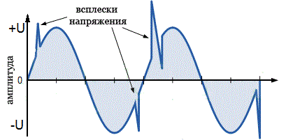
Рис. 3 - Форма волны переменного тока в переходном процессе
Варисторы подключаются непосредственно к цепям электропитания (фаза - нейтраль, фаза-фаза) при работе на переменном токе, либо плюс и минус питания при работе на постоянном токе и должны быть рассчитаны на соответствующее напряжение. Варисторы также могут быть применены для стабилизации постоянного напряжения и главным образом для защиты электронной схемы от высоких импульсов напряжения.
Варисторы для защиты бытовой электроники обычно выпускаются в виде диска с двумя выводами. Чем больше диаметр диска, тем более мощный импульс напряжения способен погасить варистор. Мощность импульса или энергию, которую способен "погасить" варистор обычно измеряют в джоулях (Дж).
На рис. 4 показаны несколько варисторов. Значение диаметра варистора в миллиметрах, как правило, вводится в маркировку самого варистора, например, JVR-07N391K (диаметр – 7 мм.).
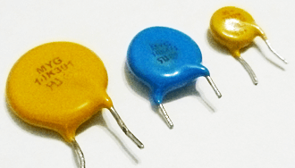
Рис. 4 - Варисторы (слева направо) MYG-14K391, MYG-10K471, JVR-07N391K
Диаметр самого большого варистора (рис. 4) типа MYG-14K391 – 14 мм. (~70 Дж), чуть поменьше варистор MYG-10K471 – 10 мм. (~45 Дж), а маленького JVR-07N391K – 7 мм. (~30 Дж).
В скобках указана величина энергии поглощения в джоулях (Дж). Как видим, варистор, обладающий самым большим диаметром в 14 мм. способен погасить энергию опасного импульса в 70 джоулей, в то время как самый маленький варистор диаметром 7 мм. способен погасить всего лишь 30 джоулей. Таким образом, по величине диаметра варистора можно косвенно судить о его максимальной энергии поглощения. Понятно, что в электронные схемы предпочтительнее устанавливать варисторы, рассчитанные на большую энергию поглощения. Также рекомендуется устанавливать в схему по два одинаковых варистора, включенных параллельно.
Также существуют варисторы и для SMD монтажа. По внешнему виду они напоминают SMD диоды и поэтому их достаточно сложно отличить.
К варисторам отечественного производства относятся изделия марки СН2-1А, СН1-2-1, ВР-4В и др.
Конечно, у варисторов имеются недостатки, но они не столь значительны по сравнению с газоразрядными приборами. Прежде всего, варисторы обладают довольно большими шумами на низкой частоте, а также меняют свои параметры со временем и от воздействия температуры.
Cопротивление варистора
Ваpистоp хаpактеpизуется статическим сопpотивлением в точке
Rстат= U/I
и динамическим или диффеpенциальным сопpотивлением
Rстат= dU/dI ,
где dU и dI - пpиpащение напpяжения и тока в выбpанной точке вольтампеpной хаpактеpистики.
При нормальной работе, варистор имеет очень высокое сопротивление, поэтому его работа схожа с работой стабилитрона. Однако, когда на варисторе напряжение превышает номинальное значение, его эффективное сопротивление сильно уменьшается, как показано на рис. 5.
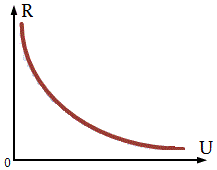
Рис. 5 - Зависимость сопротивления варистора от напряжения
Вольтамперная характеристика (ВАХ) варистора не является прямолинейной, поэтому в результате небольшого изменения напряжения происходит значительное изменение тока. На рис. 6 приведена кривая зависимости тока от напряжения для типичного варистора.
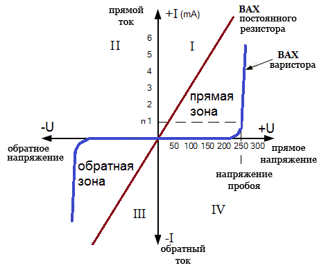
Рис. 6 - Вольт-амперная характеристика) варистора
Мы можем видеть сверху, что варистор имеет симметричную двунаправленную характеристику, то есть варистор работает в обоих направлениях (квадрант I и III) синусоиды, подобно работе стабилитрона.
Когда нет всплесков напряжения, в квадранте IV наблюдается постоянное значение тока, это ток утечки, составляющий всего несколько мкА, протекающий через варистор.
Из-за своего высокого сопротивления, варистор не оказывает влияние на цепь питания, пока напряжение находится на номинальном уровне. Номинальный уровень напряжения (классификационное напряжение) - это такое напряжение, которое необходимо приложить на выводы варистора, чтобы через него проходил ток в 1 мА. В свою очередь величина этого напряжения будет отличаться в зависимости от материала, из которого изготовлен варистор.
При превышении классификационного уровня напряжения, варистор совершает переход от изолирующего состояния в электропроводящее состояние. Когда импульсное напряжение, поступающее на варистор, становится больше, чем номинальное значение, его сопротивление резко снижается за счет лавинного эффекта в полупроводниковом материале. При этом малый ток утечки, протекающий через варистор, быстро возрастает, но в тоже время напряжение на нем остается на уровне чуть выше напряжения самого варистора. Другими словами, варистор стабилизирует напряжение на самом себе путем пропускания через себя повышенного значения тока, которое может достигать не одну сотню ампер.
Емкость варистора
Поскольку варистор, подключаясь к обоим контактам питания, ведет себя как диэлектрик, то при нормальном напряжении он работает скорее как конденсатор, а не как резистор. Каждый полупроводниковый варистора имеет определенную емкость, которая прямо пропорциональна его площади и обратно пропорциональна его толщине.
При применении в цепях постоянного тока, емкость варистора остается более-менее постоянной при условии, что приложенное напряжение не больше номинального, и его емкость резко снижается при превышении номинального значения напряжения. Что касается схем на переменном токе, то его емкость может влиять на стабильность работы устройств.
Подбор варистора
Чтобы для конкретного устройства правильно подобрать варистор, желательно знать сопротивление источника и мощность импульсов переходных процессов. Варисторы на основе оксидов металлов имеют широкий диапазон рабочего напряжения, начиная от 10 В и заканчивая свыше 1000 В переменного или постоянного тока. Вообщем необходимо знать на каком уровне напряжения нужно защитить схему электроприбора и взять варистор с небольшим запасом, например для сети 230 В подойдет варистор на 260 В.
Максимальное значение тока (пиковый ток) на которое должен быть рассчитан варистор, определяется длительностью и количеством повторений всплесков напряжения. Если варистор установлен с малым пиковым током, то это может привести к его перегреву и выходу из строя. Таким образом, для безотказной работы, варистор должен быстро рассеивать поглощенную им энергию переходного импульса и безопасно возвращаться в исходное состояние.
Применение варисторов
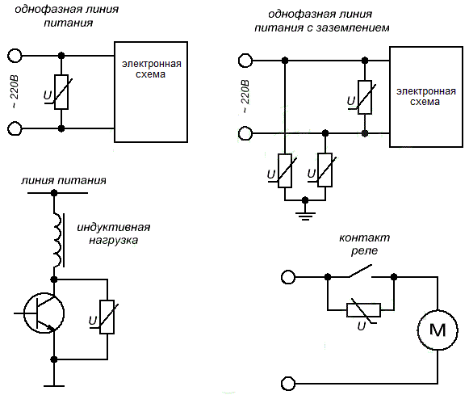
Рис. 7 - Варианты подключения варистора
Для обычной сети 220 В устанавливают защитные варисторы с напряжением срабатывания 275–420 В. На рис. 8 приведена схема сетевого фильтра.
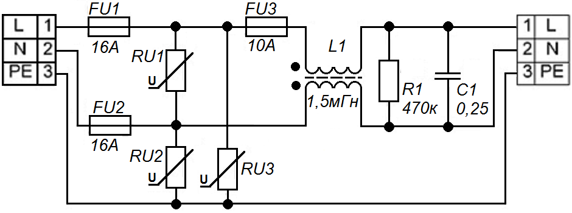
Рис. 8 - Схема сетевого фильтра
Этот сетевой фильтр защищают три варистора. Блокируется проникновение импульса не только по фазовой цепи, но и по цепи нуля. Варистор RU1 стоит между фазой и нулевым проводником. Он осуществляет основную защиту. Два других RU2 и RU3 подключаются между фазой и землёй и между нулём и землёй.
Очень часто бывает ситуация когда на линии электроснабжения вместо фазы и нуля по обоим проводам пошла фаза. Это почти верная смерть для незащищённой бытовой аппаратуры. То есть между проводами N и PE, если всё нормально, напряжения быть не должно. В случае появления фазы на проводе N варистор RU2 благополучно зашунтирует защищаемый блок.
Миниатюрные многослойные варисторы уже давно используются в схемах мобильных телефонов и защищают их от статического электричества. Так же варисторы используются для надёжной защиты компьютерных разъёмов и выводов микропроцессоров от той же статики. Варисторы активно применяются в автомобильной электронике и телекоммуникационном оборудовании. Варисторы можно встретить во входных цепях блоков питания (рис. 9).
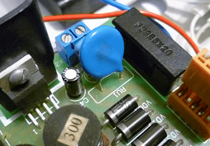
Рис. 9 - Варистор 391KD14 на плате блока питания
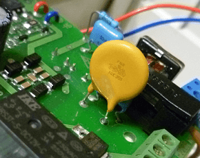
Рис. 10 - Варистор FNR-14K391 на плате охранного прибора
Используются варисторы и на платах электронного балласта для люминесцентных ламп (рис. 11).
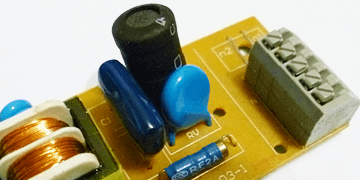
Рис. 11 - Варистор MYG-10K471 на плате ЭПРА